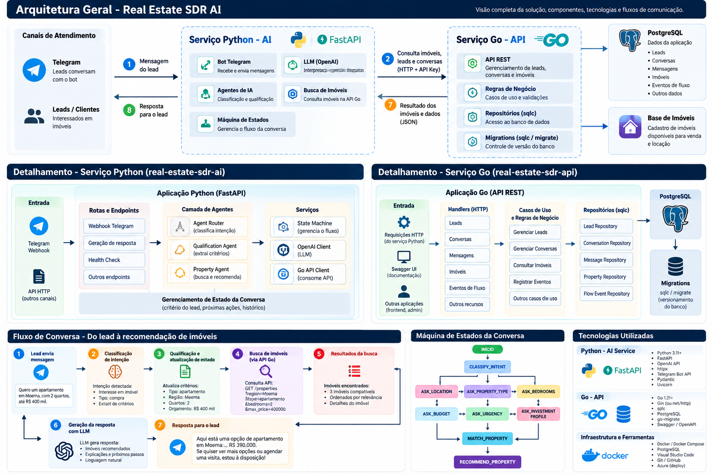

Documentação dos dois serviços da solução:
Os repositórios são separados. Este documento considera Windows PowerShell e os caminhos usados no desenvolvimento. Confirme nomes de variáveis, rotas e entrypoints no checkout atual. Nunca versione .env nem chaves.
Lead / canal de entrada (ex.: Telegram)
|
v
Python AI — localhost:8001
FastAPI, agentes, estado da conversa,
prompts, integração LLM e cliente HTTP
|
| HTTP + X-Correlation-ID
v
Go API — localhost:8080
HTTP handlers/middleware
Application / casos de uso
Domain / regras de negócio
Repositories / Infrastructure / sqlc
|
v
PostgreSQL — localhost:5432
O Python conversa com o backend Go por HTTP. A persistência de negócio fica concentrada na API Go; o Python não deve acessar diretamente o PostgreSQL de negócio. O X-Correlation-ID permite correlacionar logs entre os serviços.
Receber/processar mensagens, interpretar intenção, manter o estado da conversa, qualificar critérios (tipo de imóvel, região, orçamento, quartos e urgência), chamar o LLM e consultar a API Go para localizar imóveis compatíveis.
real-estate-sdr-ai/
├── ai/
│ └── app/
│ ├── main.py # aplicação FastAPI
│ ├── agent/ # agentes e fluxo conversacional
│ ├── api/ # endpoints e rotas
│ ├── clients/ # clientes HTTP para serviços externos/API Go
│ ├── llm/ # integração com modelo de linguagem
│ ├── models/ # modelos de entrada/saída
│ ├── prompt/ # prompts
│ └── services/ # serviços de aplicação e lógica de apoio
├── requirements.txt # dependências, se localizado na raiz
├── .env.example # modelo de configuração, se presente
├── .env # configuração local/secrets; não versionar
└── .venv/ # ambiente virtual local; não versionar
Confira os arquivos reais com Get-ChildItem -Recurse .\ai\app; a lista acima é a organização lógica conhecida, não uma garantia de que todos os diretórios estejam preenchidos.
cd \codes\fiap\8IADT-tech-challenge-fase-5\real-estate-sdr-ai
py -3.11 -m venv .venv
.\.venv\Scripts\Activate.ps1
python -m pip install --upgrade pip
python -m pip install -r requirements.txt
Se .venv já existir, não é necessário recriá-lo. Se o PowerShell bloquear a ativação, use o executável diretamente em .venv\Scripts\python.exe.
Configure o .env com base no .env.example, se existir. Confira as variáveis realmente lidas pelo código, incluindo a chave do provedor LLM (por exemplo, OPENAI_API_KEY, se aplicável), a chave interna (AI_SERVICE_API_KEY, se usada) e a URL da API Go. Não coloque valores secretos no README.
Inicie a API:
.\.venv\Scripts\python.exe -m uvicorn ai.app.main:app --host 0.0.0.0 --port 8001 --reload
Em outro terminal:
Invoke-RestMethod http://localhost:8001/health
Se estiver habilitado, a documentação OpenAPI costuma ficar em http://localhost:8001/docs; confirme no ai/app/main.py.
.\.venv\Scripts\python.exe -m pytest -v
.\.venv\Scripts\python.exe -m pytest -q
Durante o desenvolvimento, a suíte chegou a passar com 68 testes. O número pode mudar; considere o resultado do checkout atual como referência.
Expor endpoints REST, aplicar regras de negócio, coordenar casos de uso e persistir os dados em PostgreSQL. O projeto contém migrations SQL e consultas organizadas com sqlc.
real-estate-sdr-api/
├── .env
├── .env.example
├── docker-compose.yml
├── scripts/
└── backend/
├── cmd/ # entrypoints
├── internal/
│ ├── application/ # casos de uso/orquestração
│ ├── domain/ # conceitos e regras de domínio
│ ├── http/ # handlers, rotas, middleware e integração HTTP
│ ├── infrastructure/# banco e integrações técnicas
│ ├── repository/ # acesso a dados
│ └── observability/# logging/correlação, conforme implementação
├── migrations/ # migrations SQL
├── queries/ # consultas SQL usadas pelo sqlc
├── Dockerfile
├── go.mod
└── sqlc.yaml
Confirme a estrutura exata com Get-ChildItem .\.\backend\internal -Recurse.
A direção recomendada das dependências é de fora para dentro: handlers/infraestrutura dependem de casos de uso e abstrações; o domínio deve permanecer independente de detalhes técnicos.
cd \codes\fiap\8IADT-tech-challenge-fase-5\real-estate-sdr-api
Get-Content .\docker-compose.yml
docker compose up -d
docker compose ps
O ambiente usado durante o desenvolvimento tem PostgreSQL em real-estate-sdr-postgres, banco real_estate_sdr, porta local 5432. Use o docker-compose.yml atual para confirmar serviço, credenciais, volume e portas.
Se houver .env.example, crie o .env local a partir dele e preencha os valores necessários. Não compartilhe credenciais.
As migrations ficam em backend/migrations. O banco usado no desenvolvimento registrou migrations 001 a 007. A migration 007 adicionou properties.status, cujos valores válidos incluem AVAILABLE, RESERVED, SOLD, RENTED e INACTIVE.
Ter migrations no banco não garante que um banco novo será migrado automaticamente. Verifique no código/scripts se a aplicação aplica migrations no startup ou se há um comando específico. Não apague volumes nem execute alterações destrutivas sem backup.
cd .\backend
go mod download
go test -count=1 ./...
Get-ChildItem .\cmd -Recurse
Execute o pacote que realmente existir em cmd. Se o entrypoint for cmd\api, por exemplo:
go run .\cmd\api
A API local foi configurada para a porta 8080. Valide:
Invoke-RestMethod http://localhost:8080/health
Invoke-RestMethod http://localhost:8080/ready
Se a aplicação for executada pelo Compose, na raiz do projeto:
docker compose up --build -d
docker compose ps
docker compose logs -f
Não execute docker compose dentro de backend se o arquivo estiver somente na raiz.
A URL usada pelo Python deve corresponder à topologia em que os serviços estão rodando.
http://localhost:8080 para alcançar a API Go local.http://localhost:8080.http://host.docker.internal:8080 se a porta do host estiver publicada.localhost dentro de um container aponta para o próprio container.host.docker.internal; configure a URL pública/privada correta e proteja a comunicação.No ambiente de desenvolvimento são usadas API_KEY/X-API-Key para chamadas protegidas da API Go e, quando habilitado, AI_SERVICE_API_KEY/X-Internal-API-Key para o serviço de IA. Confira os middlewares e clientes para saber quais endpoints exigem autenticação.
Abra terminais separados.
cd \codes\fiap\8IADT-tech-challenge-fase-5\real-estate-sdr-api
docker compose up -d
docker compose ps
Confirme que o PostgreSQL está saudável e que as migrations necessárias foram aplicadas.
docker compose logs -f
Se for executar diretamente, entre em backend, confira cmd e use o entrypoint correto. Depois valide /health e /ready na porta 8080.
cd \codes\fiap\8IADT-tech-challenge-fase-5\real-estate-sdr-ai
.\.venv\Scripts\python.exe -m uvicorn ai.app.main:app --host 0.0.0.0 --port 8001 --reload
Valide /health na porta 8001.
cd \codes\fiap\8IADT-tech-challenge-fase-5\real-estate-sdr-ai
.\.venv\Scripts\python.exe .\ai\scripts\telegram_bot.py
O bot pode precisar de token Telegram e da URL/chave da API Go. Não exponha esses valores em logs ou no Git.
docker compose ps
docker compose logs --tail 100
Test-NetConnection localhost -Port 5432
Test-NetConnection localhost -Port 8080
Test-NetConnection localhost -Port 8001
Invoke-RestMethod http://localhost:8001/health
Invoke-RestMethod http://localhost:8080/health
Invoke-RestMethod http://localhost:8080/ready
Problemas frequentes:
X-API-Key e/ou X-Internal-API-Key.requirements.txt no .venv usado para iniciar a API..env, tokens ou chaves..env.example sem secrets reais.X-Correlation-ID e inclua-o nos logs.--reload e configure health checks, logs, recursos e secrets./health responde./ready confirma a prontidão do backend/banco.go test -count=1 ./... passa..venv e dependências Python estão corretos./health responde.python -m pytest -q passa.backend/cmd;docker-compose.yml;| Componente | Responsabilidade |
|---|---|
| FastAPI | Exposição dos endpoints HTTP |
| Agent Router | Direcionamento do fluxo conforme a intenção |
| Qualification Agent | Extração e qualificação dos critérios do lead |
| State Machine | Controle das etapas da conversa |
| Property Agent | Coordenação da busca e recomendação de imóveis |
| LLM Client | Integração com o modelo de linguagem |
| Go API Client | Comunicação com o backend de negócio |
| Property Matching Service | Aplicação dos critérios de compatibilidade |
Execute os testes a partir da raiz do projeto:
.\.venv\Scripts\python.exe -m pytest -v
Para uma execução resumida:
.\.venv\Scripts\python.exe -m pytest -q
Os testes devem cobrir a extração de critérios, as mudanças de estado, a busca de imóveis, os casos sem resultados e o tratamento de falhas nas integrações.
O serviço deve permitir acompanhar as requisições, falhas e latência das integrações.
X-Correlation-ID, conforme a implementação./health.Este documento descreve a camada de Retrieval-Augmented Generation (RAG) do projeto real-estate-sdr-ai, responsável por recuperar informações de uma base de conhecimento e disponibilizá-las [...]
O RAG complementa o contexto conversacional do lead com informações recuperadas de documentos de conhecimento do negócio. A intenção é permitir respostas mais consistentes sobre assuntos como:
O RAG é uma fonte de contexto para o LLM. Ele não substitui a busca estruturada de imóveis nem deve inventar disponibilidade, preços ou características que não estejam confirmados na API de [...]
Pergunta/mensagem do lead
|
v
AIService
|
v
RAGService
|
+----> EmbeddingService
| |
| v
| Embedding de consulta
|
v
KnowledgeRepository
|
v
PostgreSQL + pgvector
(similaridade cosseno)
|
v
Trechos/documentos relevantes
|
v
PromptBuilder
|
v
LLM
|
v
Resposta ao lead
O diagrama representa o fluxo arquitetural esperado a partir dos componentes conhecidos. Confirme no código atual os detalhes de chamada, filtros, tratamento de ausência de resultados e formato do c[...]
EmbeddingService transforma a consulta em um vetor usando text-embedding-3-small.KnowledgeRepository consulta os documentos indexados no PostgreSQL com pgvector e ordena os resultados por similaridade cosseno.RAGService coordena a recuperação e disponibiliza os trechos relevantes para o fluxo de geração.PromptBuilder incorpora o contexto recuperado ao prompt encaminhado ao LLM.A tabela conhecida para armazenar conhecimento é knowledge_documents. Ela é usada pela camada de persistência de conhecimento e pela busca semântica.
A extensão pgvector permite armazenar embeddings e realizar operações de similaridade diretamente no PostgreSQL, evitando a necessidade de um banco vetorial separado nesta arquitetura.
Antes de executar o projeto em um ambiente novo, confira as migrations e valide:
vector está habilitada.knowledge_documents foi criada.text-embedding-3-small).Os tipos de conteúdo considerados para a base incluem:
| Tema | Exemplo de informação |
|---|---|
| Regiões atendidas | Bairros e regiões em que a imobiliária atua |
| Financiamento | Orientações gerais sobre o processo de financiamento |
| Visitas | Orientações para agendamento e visita a imóveis |
O projeto mantém duas responsabilidades distintas:
A geração de embeddings depende de credenciais válidas do provedor de embeddings. Confira no código e no arquivo .env.example os nomes reais das variáveis de ambiente utilizadas.
A validação deve cobrir separadamente a geração de embeddings, a persistência, a recuperação semântica e a integração com a geração de respostas.
knowledge_documents existe.EmbeddingService gera vetores com a dimensão esperada.KnowledgeRepository recupera documentos relevantes para uma consulta.RAGService trata consultas sem resultados.PromptBuilder recebe o contexto recuperado.Use somente depois de confirmar que há documentos correspondentes na base:
A camada RAG do real-estate-sdr-ai combina embeddings da OpenAI, PostgreSQL com pgvector, recuperação semântica por similaridade cosseno e integração do contexto recuperado ao prompt do LLM. Se[...]